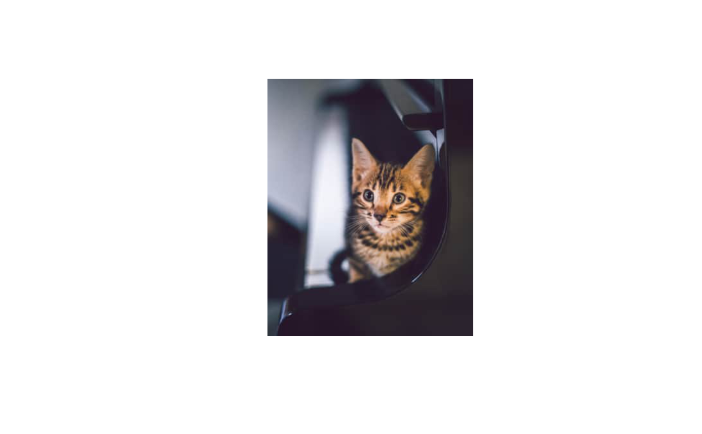
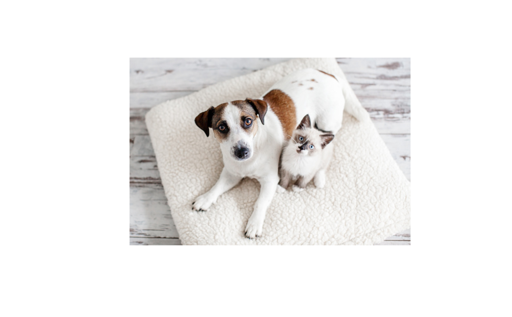

This function displays a picture of a cat and plays a short sound clip containing cat meow. It is possible that once in a while you might get a picture that is in no way feline related. In such cases, just try again.
Currently, the images are collected from the following sources-
The sound files come from the following CC BY 3.0 source: https://soundbible.com/
Arguments
- url
An URL for the source from which individual image URLs are to be extracted. Default is
NULL. IfNULL, a randomly drawn image from the default collection will be shown.- meow
Logical that decides whether to play a meow sound along with the picture of a cat.
- sound
A character string or a number specifying what sound to be played by either specifying one of the built in sounds, specifying the path to a
.wavfile or specifying an URL. There are currently 6 meows included. The default is3.- only_kitten
Logical that decides whether only kitten pics should be selected (default:
FALSE).- ...
Additional arguments (currently ignored).
Examples
# \donttest{
library(kittyR)
# relying on default collection
set.seed(122)
kittyR(meow = FALSE)
# in case you want only pics of kittens
set.seed(111)
kittyR(meow = FALSE, only_kitten = TRUE)

# provide a custom URL
set.seed(300)
kittyR(
url = "https://unsplash.com/s/photos/cat/",
meow = FALSE
)

# }